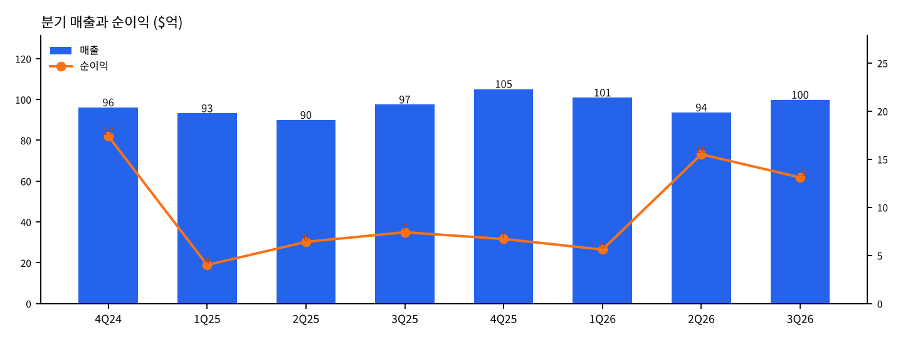
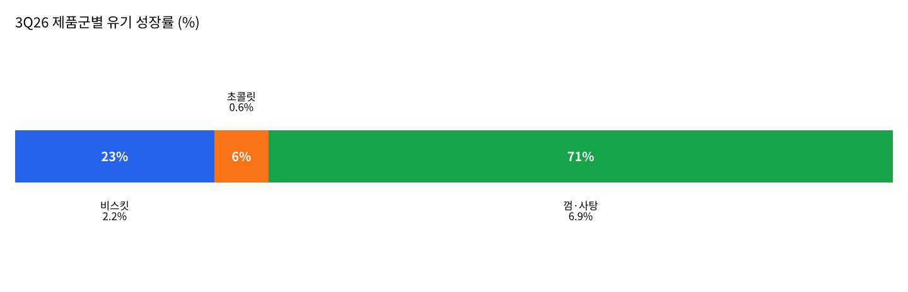
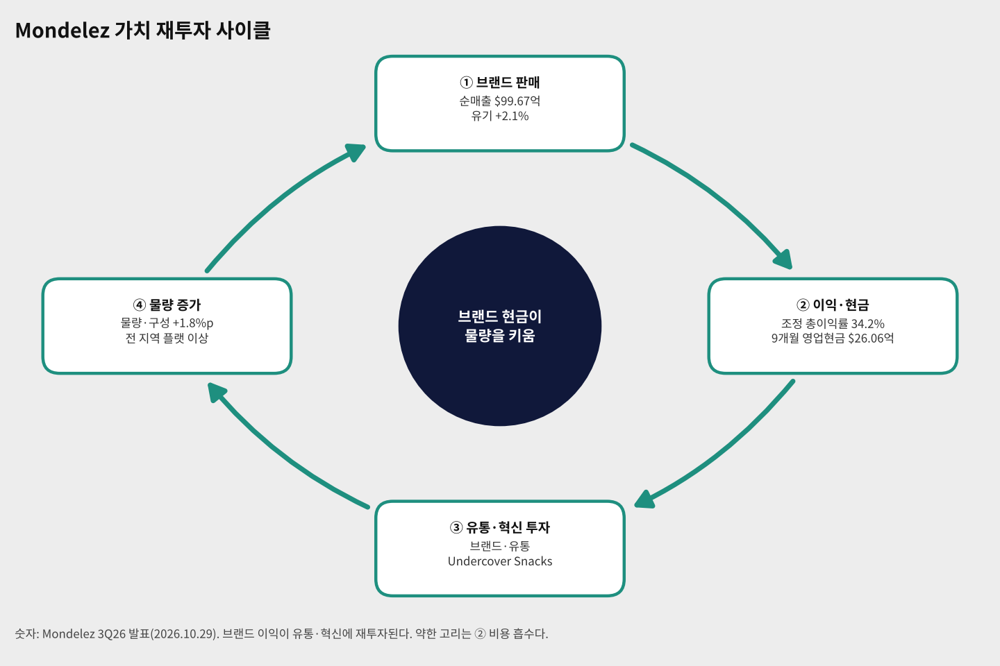

Mondelez는 비스킷·초콜릿·껌을 파는 글로벌 브랜드 회사다. 가격 인상 대신 물량으로 성장하는 방향으로 돌아왔다.
| 항목 | 내용 |
|---|---|
| 종목 | Mondelez International (MDLZ) · NASDAQ · 식품(스낵) · 일리노이 시카고 |
| 최근 분기(3Q26) | 순매출 $99.67억, 조정 EPS $0.78 |
| 핵심 브랜드 | Oreo, Cadbury, Toblerone, Ritz, Sour Patch Kids |
| 직원 수 | 약 91,000명(트레이딩뷰) |
| 멀티플 | PER·PEG·P/S는 08~10 항목 표 참조 |
| 직책 | 인물 | 역할·특징 |
|---|---|---|
| 회장·CEO | 디르크 판 더 퓌터(Dirk Van de Put) | "3년 만의 최고 물량 성장"이라고 설명 |
| CFO | (확인 필요) | 회사 공개 자료 기준 확인 필요 |
경영 스타일: 스낵 집중 + 생산성. 브랜드·유통에 투자하고 생산성 절감으로 비용 압력을 흡수하려 한다.
Oreo·Cadbury 혁신 제품과 유통 투자로 물량을 늘린다.
건강 지향 스낵(Undercover Snacks 인수)까지 영역을 넓힌다.
다음 실적발표는 세 가지 질문에 답하는 자리다.
1. 물량 성장이 이어지나?
2. 코코아·운임·유제품 비용을 흡수하나?
3. 유럽 부진이 풀리나?
한 줄 판정 규칙: 첫 질문(물량 성장)이 이어지면 약한 고리인 ② 비용 흡수만 확인하면 된다고 본다.
일정: 4Q26 실적 발표는 2027.01.28 예정(트레이딩뷰). 2027 가이던스가 함께 나온다.
| 분기 | 매출 | 순이익 | EPS | 조정 EPS | 특이 사항 |
|---|---|---|---|---|---|
| 4Q24 | $96.0억 | $17.4억 | 1.30 | 0.65 | |
| 1Q25 | $93.1억 | $4.0억 | 0.31 | 0.74 | |
| 2Q25 | $89.8억 | $6.4억 | 0.49 | 0.73 | |
| 3Q25 | $97.4억 | $7.4억 | 0.57 | 0.72 | |
| 4Q25 | $105.0억 | $6.7억 | 0.51 | 0.72 | |
| 1Q26 | $100.8억 | $5.6억 | 0.44 | 0.63 | |
| 2Q26 | $93.5억 | $15.5억 | 1.20 | 0.73 | |
| 3Q26 | $99.7억 | $13.1억 | 1.02 | 0.77 | 물량 중심 성장 복귀, GAAP EPS는 일회성 이익 포함 |
매출은 트레이딩뷰 스캐너의 분기 총매출이라 회사가 발표한 순매출과 다를 수 있다. 3Q26 GAAP EPS $1.02에는 일회성 이익이 포함돼 있다. 조정 EPS는 회사 발표 $0.78이고 트레이딩뷰는 $0.77로 표기한다. 매출·순이익·EPS(GAAP 희석)는 트레이딩뷰 스캐너, 조정 EPS는 트레이딩뷰 실적 페이지의 Reported 값이다. 분기 정렬은 오래된 분기→최신이다.

흐름 요약: 최근 분기 매출은 $99.7억로 전년 동기 $97.4억 대비 +2.4%, 순이익은 $13.1억(전년 $7.4억)다. 최근 4분기 GAAP EPS는 $3.17, 조정 EPS는 $2.85다.
| 항목 | 내용 | 3Q26 유기 성장 | 비고 |
|---|---|---|---|
| 비스킷·베이크드 스낵 | Oreo, Ritz 등 | +2.2% | 회사 발표 |
| 초콜릿 | Cadbury 등 | +0.6% | 유럽 물량 개선 |
| 껌·사탕 | Sour Patch Kids 등 | +6.9% | 중남미·중국 |

껌·사탕이 가장 빨리 크고 초콜릿은 코코아 비용과 가격 영향으로 가장 느리다.
Mondelez는 세계 어디서나 사람들이 간식을 즐기게 하는 것을 목표로 한다.
| 축 | 내용 |
|---|---|
| 브랜드 | Oreo, Cadbury |
| 성장 | 물량 +1.8%p |
| 현금 | FCF 약 $30억 |

| 이동평균 | 값 | 종가 대비 | 위치 |
|---|---|---|---|
| 5일선 | $66.80 | -1.8% | 종가 아래 |
| 20일선 | $65.52 | +0.2% | 종가 위 |
| 50일선 | $62.93 | +4.3% | 종가 위 |
| 100일선 | $62.30 | +5.3% | 종가 위 |
| 200일선 | $60.98 | +7.6% | 종가 위 |
52주 고가 $68.92(2026-11-16)·저가 $51.20(2026-01-08) 범위에서 종가 $65.62는 20일선, 50일선, 100일선, 200일선을 웃돌고 5일선은 밑돈다.
| 규칙 | 기준 | 현재 값 | 신호 |
|---|---|---|---|
| 장기 추세 필터 | 종가 vs 200일선 | $65.62 > $60.98 | 매수 |
| 중장기 교차 | 50일선 vs 200일선 | $62.93 > $60.98 | 매수 |
| 단기 교차 | 20일선 vs 50일선 | $65.52 > $62.93 | 매수 |
| 돈키언 채널 | 55일 고가 $68.92 / 저가 $57.32 | 중간값 $63.12 위 | 매수 |
| 1개월 모멘텀 | 21거래일 수익률 | +4.6% (기준 $62.74) | 매수 |
| 3개월 모멘텀 | 63거래일 수익률 | +1.8% (기준 $64.45) | 매수 |
| 6개월 모멘텀 | 126거래일 수익률 | +6.7% (기준 $61.50) | 매수 |
| 12개월 모멘텀 | 252거래일 수익률 | +17.6% (기준 $55.78) | 매수 |
| 종합 (8개 평균) | +1.00 | 강한 매수 |
해석: 매수 신호 8개(장기 추세 필터, 중장기 교차, 단기 교차, 돈키언 채널, 1개월 모멘텀, 3개월 모멘텀, 6개월 모멘텀, 12개월 모멘텀), 매도 신호 0개(없음). CTA 점수 +1.00(강한 매수). 14일 ATR $1.51 (2.3%), 52주 고가 $68.92 · 저가 $51.20.
| 가격 | 기준 | 무엇이 바뀌나 |
|---|---|---|
| $68.92 | 55일 고가 | 돌파 시 채널 상단 갱신 |
| $64.45 | 3개월 모멘텀 기준가 | 종가가 이 가격 위면 3개월 신호 매수 |
| $63.12 | 돈키언 중간값 | 55일 채널 중간값 위/아래로 신호가 바뀜 |
| $62.74 | 1개월 모멘텀 기준가 | 종가가 이 가격 위면 1개월 신호 매수 |
| $61.50 | 6개월 모멘텀 기준가 | 종가가 이 가격 위면 6개월 신호 매수 |
| $60.98 | 200일선 | 종가가 이 선 위/아래인지로 장기 추세 신호가 바뀜 |
| $57.32 | 55일 저가 | 이탈 시 채널 하단 갱신 |
| $55.78 | 12개월 모멘텀 기준가 | 종가가 이 가격 위면 12개월 신호 매수 |
가격 수준은 신호가 바뀌는 기준선일 뿐 진입·청산 가격 제안이 아니다. 20일/50일 교차는 이동평균 자체가 움직여 단일 가격으로 표시하지 않았다. 일봉·주봉은 종가 기준 직접 계산(고저 데이터 미사용)이다.
| 악재 요인 | 내용 | 강도 |
|---|---|---|
| 코코아 변동 | 코코아 시장 변동성 | 중간 |
| 비용 인플레이션 | 운임·유제품·유가·포장 | 중간 |
| 유럽 | 유기 −2.1% | 참고 |
| 티커 | 회사 | PER(TTM) | PEG | P/S | EPS 성장(YoY) |
|---|---|---|---|---|---|
| MDLZ | Mondelez International | 23.0배 | 65.39 | 2.08배 | +0% |
| HSY | Hershey | 19.7배 | 0.62 | 2.89배 | +32% |
| KHC | Kraft Heinz | – | – | 1.22배 | +21% |
| GIS | General Mills | – | – | 1.02배 | -132% |
| PEP | PepsiCo | 17.8배 | 0.35 | 1.98배 | +51% |
비교 결론: Mondelez의 PER 23.0배는 Hershey·PepsiCo보다 높다. EPS 성장률이 0%라 PEG 65.39는 의미가 없다. Hershey(0.62)·PepsiCo(0.35)가 더 낮다.
현금·부채는 트레이딩뷰 스캐너 값이다. 장기부채가 현금보다 훨씬 크다.
| 지표 | 값 | 출처 | 해석 |
|---|---|---|---|
| 현금·단기투자 | $17억 | 트레이딩뷰 스캐너(최근 분기) | |
| 총부채 | $223억 | 트레이딩뷰 스캐너(최근 분기) | |
| 순부채(부채−현금) | $206억 | 내 계산 | 현금 대비 부채 부담 |
| 잉여현금흐름(TTM) | $37억 | 트레이딩뷰 스캐너 | |
| TTM 매출 | $399억 | 트레이딩뷰 스캐너 |
| 기준 | 매출 | P/S | 비고 |
|---|---|---|---|
| 내 계산(종가 ÷ 최근 4분기 매출 합계) | $399.0억 | 2.08배 | 시총은 정렬용 데이터에서만 사용 |
| 동종(트레이딩뷰) | – | HSY 2.89배 · KHC 1.22배 · GIS 1.02배 · PEP 1.98배 | 11.19 |
해석: 9개월 영업현금흐름 $26.06억(전년 $21.17억)으로 늘었다. 부채는 크지만 현금창출력이 이를 감당한다(내 해석).
EBITDA는 영업활동의 현금 창출력을 보는 지표이고, PEG는 PER을 EPS 성장률로 나눈 값이다. EBITDA·FCF는 트레이딩뷰 TTM 값이다.
| 지표 | 값 | 산출 |
|---|---|---|
| EBITDA(TTM) | $87억 | 트레이딩뷰 스캐너 |
| EBITDA 마진 | 21.8% | EBITDA ÷ TTM 매출(내 계산) |
| FCF 마진 | 9.3% | FCF ÷ TTM 매출(내 계산) |
| PER(GAAP TTM) | 20.7배 | $65.62 ÷ $3.17 |
| PER(조정 TTM) | 23.0배 | $65.62 ÷ $2.85 |
| 방식 | PER | EPS 성장률 | PEG | 판정 |
|---|---|---|---|---|
| 조정 EPS (TTM $2.85) | 23.0배 | +0% ($2.84 → $2.85) | 65.39 | 기준 초과 |
| GAAP EPS (TTM $3.17) | 20.7배 | +19% ($2.67 → $3.17) | 1.11 | 기준 초과 |
판정: 조정 EPS 기준 PEG 65.39 → 1.0 초과 PEG 기준은 1.0 이하 투자 적격, 0.5 이하 적극 매수다. EPS 성장률은 최근 4분기 EPS 합계를 직전 4분기 합계와 비교한 값(내 계산)이고, 일회성 항목이 있으면 조정 EPS 행을 함께 본다.

Mondelez의 사이클: 브랜드 이익이 유통·혁신에 재투자돼 물량을 늘리고, 물량이 다시 매출과 이익이 되는 순환이다.
| 고리 | 현재 숫자·근거 |
|---|---|
| ① 브랜드 판매 | 3Q26 순매출 $99.67억(+2.3%) · 유기 +2.1% |
| ② 이익·현금 | 조정 총이익률 34.2%(+380bp) · 9개월 영업현금 $26.06억 |
| ③ 유통·혁신 투자 | 브랜드·유통 투자 · Undercover Snacks 인수 |
| ④ 물량 증가 | 물량·구성 +1.8%p(3년 만에 최고) · 전 지역 플랫 이상 |
사이클의 특징: 약한 고리는 ② 비용 흡수다(코코아·운임·유제품 인플레이션). "(내 해석)"은 보고서 수치가 아닌 해석이다.